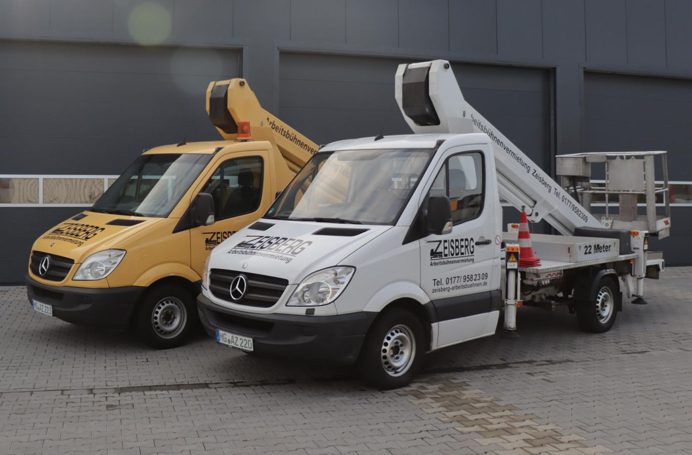

Ruthmann TB 220
auf Mercedes Sprinter 311 CDI
22 mArbeitshöhe
200 kgTragfähigkeit
13,80 mReichweite*
Moderne Bühne mit Aufstell- und Einfahrautomatik.
Technische Daten
- Fahrzeugbreite ohne / mit Außenspiegel
- ca. 2,10 m / 2,45 m
- Fahrzeughöhe
- ca. 3,05 m
- Seitliche Reichweite von Mitte Drehkranz (Hersteller)
- bis ca. 13,80 m
- Ab Fahrzeugaußenkante nach hinten
- ca. 8,80 m
- Einseitige Abstützung über Ausleger seitlich
- ca. 9,50 m
- Beidseitige Abstützung seitlich / nach hinten
- ca. 10,80 m / 9,25 m
- Abstützbreite, Ausleger einseitig vorne / hinten
- 2,85 m / 2,70 m
- Abstützbreite, Ausleger beidseitig vorne / hinten
- 3,48 m / 3,31 m
- Gesamtmasse zulässig
- 3,5 t
- Arbeitsbühnen-Kategorie
- Typ 1b